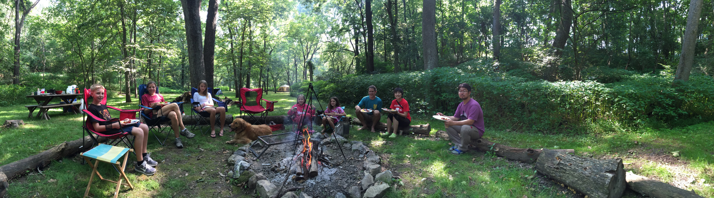
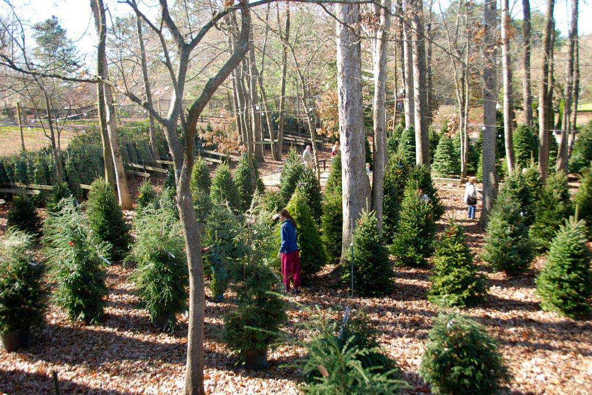
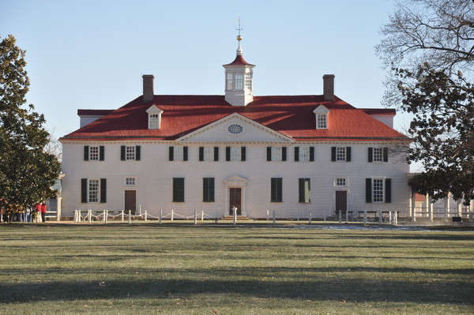

One distinctive aspect of the English Now! experience is our outdoor special events. These special events are all optional – students are not required to participate – but they are a great way to experience and better understand the United States. Join us for great outdoor activities in all four seasons.
Lunchtime Talks & Recommendations Regarding Places to Visit
We hold informal Lunchtime Talks once a month. We talk about American culture and society, and we often discuss how Americans celebrate holidays – with trips to the beach, the mountains, other cities, or other destinations. Each Spring we talk to students about America’s National Parks. We are glad to loan you a copy of the book or DVD series, The National Parks: America’ Best Idea. We also have a library of recommendations of our best ideas about day- or weekend-visits, to destinations including Charlottesville, Virginia; New York; Philadelphia; and the Shenandoah Mountains. We are happy to offer you some ideas about how best to experience the U.S., whether you are new to the country or have been here for years.
Summer: Hiking & Camping in the Shenandoah Mountains
The highlight of our outdoor programs is our annual Shenandoah Mountain Camping & Hiking Trip. We travel with students to Virginia’s famous Old Rag Mountain, considered one of the best hikes on the East Coast, and organize an overnight camping experience. Equipment is provided if you don’t have any! See the photo of the view from Old Rag Mountain above, and experience the campfire in the photo below! Families welcome.
Fall: Picnic on the Potomac River, with Biking & Kayaking Options
We organize an enjoyable day trip on the Potomac River each October. Students and their families may drive to a picnic lunch at Fletcher’s Boathouse in Northwest Washington, D.C., or many students opt to bike on the Capital Crescent Trail five miles into Washington, D.C., to the picnic. After lunch many try kayaking on the Potomac River. You’ll be amazed at what a great experience this can be, so close to downtown Washington, D.C.
Winter: A Visit to the Woods, to a Christmas Tree Farm
We invite you to join us for an outing to a Christmas tree farm in Maryland in early December. You and your family may join in the experience of selecting a fresh tree to decorate your home. Cut the tree down yourself, or have someone help you, and enjoy hot chocolate and hot apple cider to keep warm. Please note: this outing is open to students of all faith backgrounds. Even if you do not celebrate Christmas, we hope you will enjoy the cultural experience and seeing some of the countryside outside of Washington, D.C.
 Spring: Washington’s Mount Vernon or Jefferson's Monticello and Charlottesville
We traveled in Spring 2015 to Mount Vernon, George Washington’s estate, a great destination not far from the nation’s capital. Mount Vernon enables visitors to understand Washington’s background as a Virginia plantation owner, in his natural environment. In Spring 2016 we will travel to Charlottesville, Virginia, a university town that was also the home of Thomas Jefferson. We look forward to visiting Monticello, Jefferson's home, as well as the campus of the University of Virginia.
The Washington, D.C. area offers us many ways to share the great outdoors with our students. We look forward to sharing many of these destinations with you and hope that you may engage, enjoy, and thrive in your studies and during your time in the U.S., through these experiences! Please contact us with any questions about these outings or any other aspect of your studies.